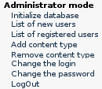
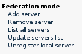
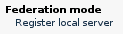

Information
Site Administration
|
Site Administration
This help is focused for the administrators of
PlanetDR servers. This help you to understand the semantic of actions
and what involves them. This page is divided in two parts: the first for
the case when you just installed the server, and the second one for when
the server is initialized and available for public use. In this page is
suposed that you have login in as Administrator role.
- When you have just started the PlanetDR you can see
these menus:

- Initialize database: Inserts two registers
into local database to update the location of different directories,
included them in planetdr web application. This action must
to be executed before to make public your PlanetDR server.
- List of new users: The PlanetDR server permit to
register of new users in moderate form. That is, when new users are
registered to our PlanetDR server, the Administrator must to accept
or deny their registration. In any case, an email is sended to
inform of its result. Finally, if you come in this option, you can
see all pending user registrations.
- List of registered users: This option permits you
to see all accepted users.
- Add content type: Inserts new type of contents.
This consist by an expression to permit to define a category of
digital resources. This action must to be executed almost once
before to make public your PlanetDR server.
- Remove content type: Permit to remove existing
content types.
- Change the login: Permit to change your login.
For example, for System to GrantBrother.
- Change the password: Permit to change your
password. This action is recomended before to make public your
PlanetDR server, because ALL PlanetDR servers take the same one
initially.
- LogOut: Log out of your PlanetDR session.

- Add server: Manually adds a new ECL server
information. The ECL servers are compatible digital repository
servers with the PlanetDR Federation. This operation updates either all
servers in PlannetDR Federation automatically and the local database
with new server.
- Remove server: Manually removes an existing
server. This action is only recommended when target server has disappeared
or just not offers the ECL or PlanetDR repository services.
- List all servers: Makes a query to the
PlanetDR Federation to request all up PlanetDR and ECL servers.
- Update servers list: You can to force
a manual synchronization of PlanetDR Federation and local database servers list.
After this, you update the local database with new PlanetDR Federation servers
and you update the rest of PlanetDR Federation servers with your extra
servers existing in your local database.
- Unregister local server: When you decide
to shutdown your PlanetDR, you must execute this option to inform
PlanetDR Federation of your exit.
If you see the following menu, your PlanetDR server has not
started successfully. You can identify the error in the $TOMCAT_HOME/logs/catalina.out, in a line
with the term "federation service". You can report these detailed bugs to us by email
to Jordi Pujol.

How to report errors
Send an email to Jordi Pujol with the
following information, and we will contact you soon.
We already agree feedback with your comments, suggestions and questions.
- Version of PlanetDR installation.
- Version of installed Tomcat.
- Version of installed MySQL
- $TOMCAT_HOME/logs/catalina.out logs file (in zip or tar.gz archive).
- $TOMCAT_HOME/webapps/planetdr/WEB-INF/web.xml and dolr-config.xml (if exists).
- Detailed errors.
IMPORTANT: All this information must NOT be greater than 3MB.
|